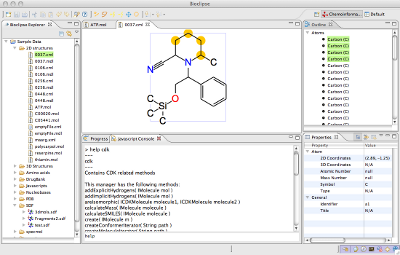
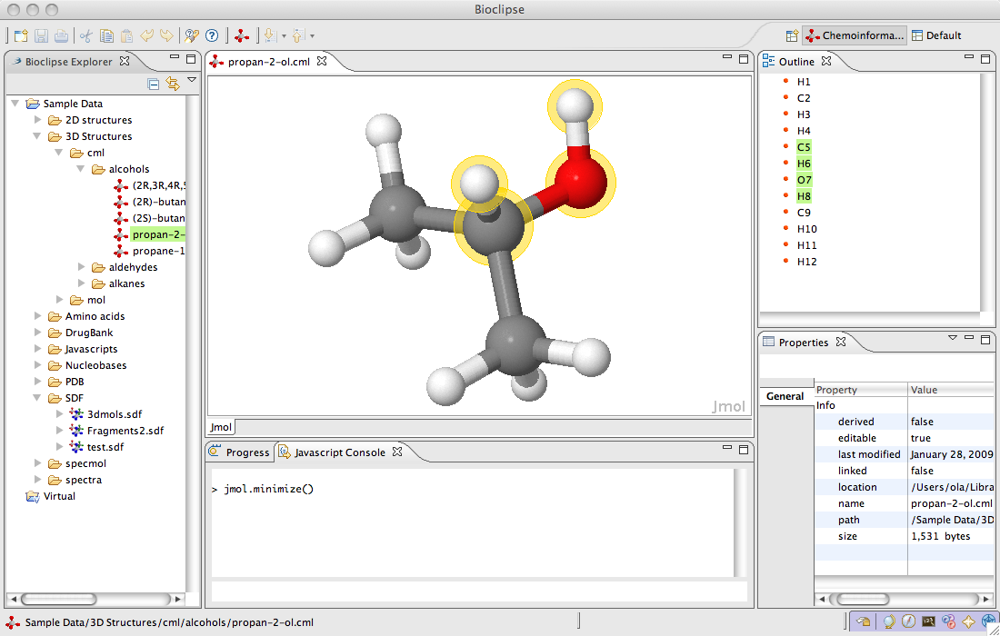

What is Bioclipse?

Bioclipse is a Workbench
End users profit from a fully customizable and feature-rich workbench with an intuitive user interface.
The system comes with advanced chemical
functionality, such as 2D editing, interactive 3D visualization, I/O for
the most common file formats, and custom visualizations of analysis results.
Bioclipse is a Rich Client
Bioclipse is a Rich Client, which means it is a software application that runs
on the local computer but takes full advantage of networked services. It delivers
a native, responsive user interface that integrates with the operating system and
supports drag and drop, cut and paste, and use of local resources such as printers.
Intuitive wizards guide users through complex tasks, and automatic updates means that
the latest version is always used.
Based on Eclipse, Bioclipse is equipped with the most advanced
plugin architecture available, which makes it possible to
extend it in any direction.
Bioclipse is a Platform
That Bioclipse is a platform for life science, which means it is open-ended. It can
be used as a platform to integrate applications, add new features, publish updates
to data collections, and extend into virtually any direction.
Bioclipse has a large and active user community, and there are plugins available for
many areas in life science. The active user community adds rapid bug fixing and
feature implementation to the picture.

Bioclipse is a Framework
Bioclipse is a framework that greatly facilitates implementation of new functionality
in life science. The scriptable infrastructure makes it easy to write scripts that
extend the functionality of Bioclispe, and the ability to write custom plugins
is another option for extending the framework. The core object model is extensible,
so providing new implementations or interfaces is straightforward.
Developers are able to build on the Bioclipse framework and take advantage of
the existing user-base to make their implementations widely accessible for the public
via the software updates function.
Bioclipse enables new Science
Many research subjects come together in Bioclipse. For example, the spectral functionality
makes use of the cheminformatics features to link spectra to chemical structures. There are
also projects that apply data analysis on data collections, and visualize results
in 3D. The open nature of the project makes it an ideal integration platform towards new science.
Overview of the Bioclipse Workbench